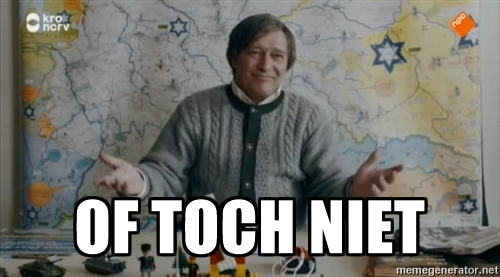

üçì JAMstack üçì
Iain van der Wiel
Wat is JAMstack?
JAMstack is een "stack" van technieken om met code, content en templates "static sites" te genereren.
JAM? Stack?
De stack:
- JavaScript
(code)
- API's
(content)
- Markup
(templates)
Static sites zijn:
-
Snel
Site wordt opgebouwd tot simpele files
-
Veilig
Want geen directe requests naar server/database door de bezoeker
-
Schaalbaar
Hosting is simpel op te zetten en op te schalen
Statisch?
Maar wij maken toch dynamische websites?
Met een CMS?
En frameworks?
En API's?
Dynamisch?
Content is beheerbaar, dus dynamisch
?

Content:
- Wordt beheerd in een CMS
- Tussen wijzigingen is deze statisch
- Tijd tussen wijzingen kan relatief lang zijn
Waarom zou je hier dan nog een
CMS
of
framework
met een
database
voor aanspreken?
Enter üçì JAMstack üçì
Wat lost JAMstack op in deze situaties?
-
Geen overhead van draaien CMS / framework
-
Verminderde complexiteit hosting en server
-
Geen traagheid door zware API's
-
Verbeterde veiligheid door statische files
-
Meer vrijheid door ontkoppelde front-end
But wait, there's more!
Dit wordt vele malen makkelijker:
Global CDN,
Caching,
Cache invalidation,
Atomic deploys,
Incremental build,
Rollbacks,
Continuous deployment,
Critical rendering,
etc.,
etc.,
etc.
Waar is dit
uitermate geschikt voor?
- Sites met voornamelijk content
- Reeds opgezette API's
- Performance
Waar is dit
minder geschikt voor?
- Real-time / gebruikers specifieke data
- Webshops
- Dashboards
- Afhandeling formulieren
- Zoeken
Maar
niet onmogelijk...
Hoe doen we dit dan?
- Inrichten CMS / framework met een API
- Static site generator inrichten
- Deployment inrichten die een static site genereert
- Simpele hosting van een lading bestanden
- Global CDN voor supersnelle wereldwijde hosting
Waarmee doen we dit?
Static site generators
- Jekyll (Ruby)
- Gatsby (Node.js)
- Hugo (Go)
Waarmee doen we dit?
CMS
- Netlify CMS
- Contentful
- Headless Drupal / WordPress
Waarmee doen we dit?
Hosting / deployment
- Amazon AWS
- Google Cloud Storage
- Surge.sh
- Zeit.co
- Netlify